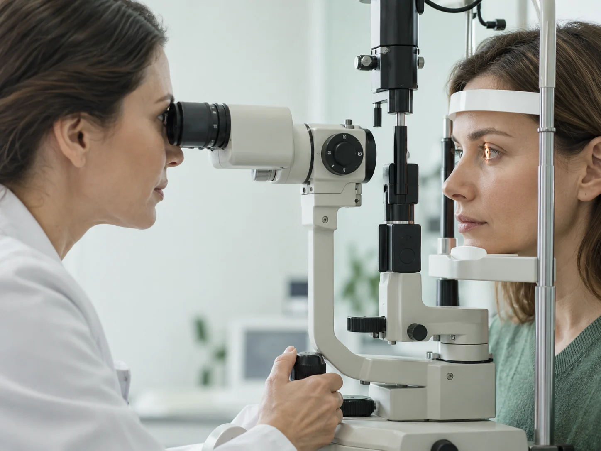
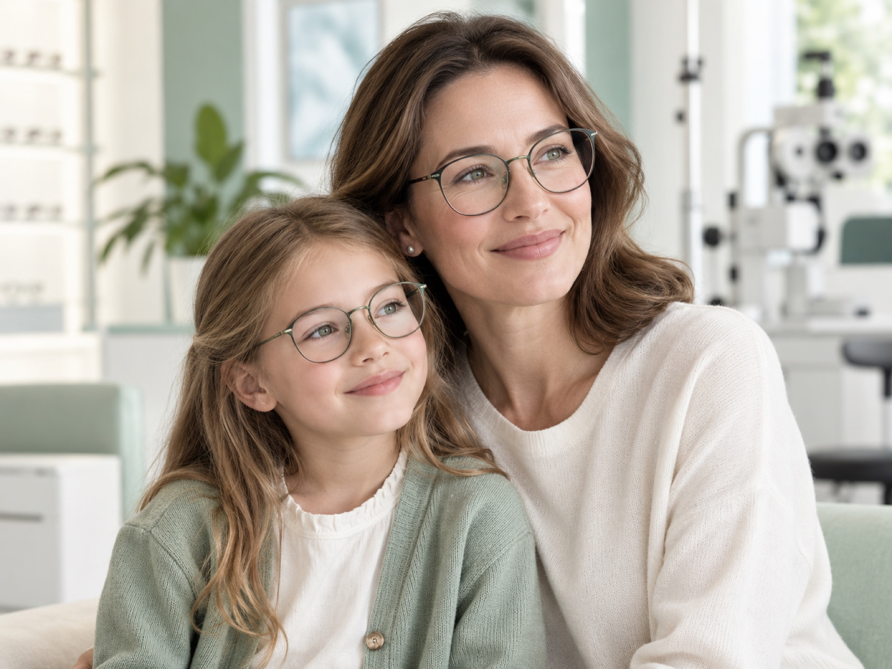
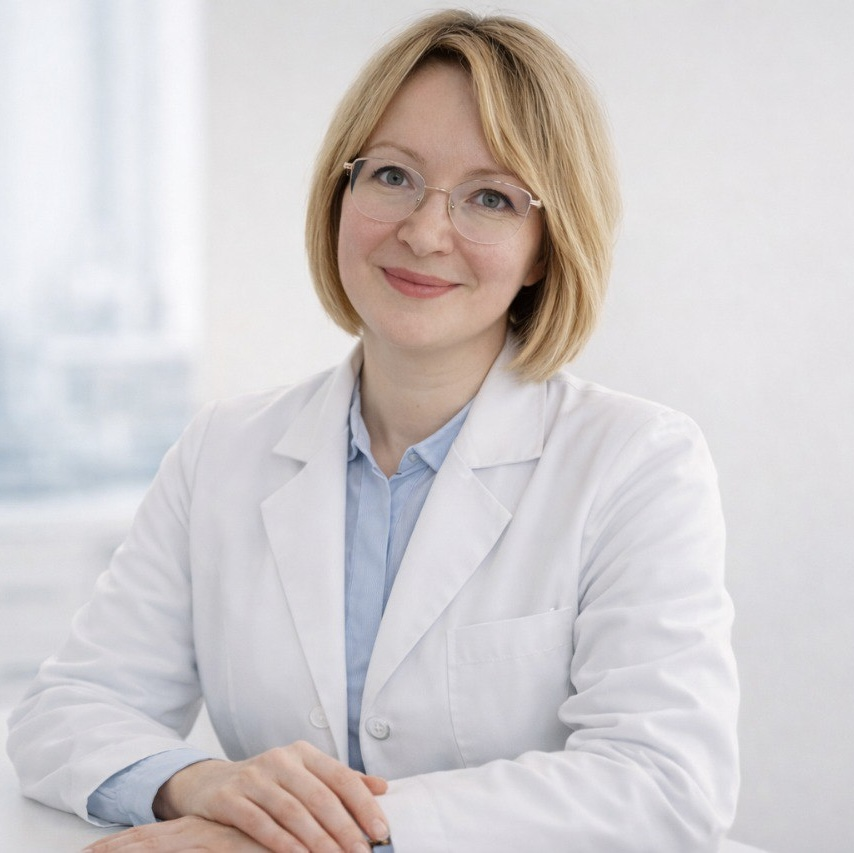

Ранняя диагностика
Оцениваем риски и выявляем миопию на начальной стадии.
Центр оптической коррекции зрения · Москва
Точная диагностика, контроль детской миопии и персональный подбор коррекции — в одном центре для всей семьи.
Направления
Не нужно разбираться в медицинских кодах. Выберите задачу — мы подскажем подходящий формат приёма.

Диагностика
Комплексное обследование помогает врачу увидеть полную картину и подобрать подходящую коррекцию.
Первый визит
Спокойно и последовательно: от первого обращения до понятного плана коррекции.
Выберите удобное время онлайн или по телефону.
Врач проверит зрение и проведёт необходимые исследования.
Покажем результаты и ответим на вопросы понятным языком.
Подберём решение и согласуем дальнейшее наблюдение.
Стоимость лечения и коррекции
Показываем базовую стоимость и объясняем, что входит. Точная программа формируется после диагностики.
Центр контроля миопии
Центр контроля миопии на базе ООО «Академоптика» совместно с EssilorLuxottica объединяет офтальмологию и оптические технологии для детей с прогрессирующей миопией.
Подробнее о центреОцениваем риски и выявляем миопию на начальной стадии.
Используем доказанные и безопасные методики контроля.
Объясняем каждое назначение ребёнку и родителям.
О центре
Объединяем медицинскую экспертизу, современные методы коррекции и внимательное сопровождение пациентов.

Диагностика и наблюдение детской близорукости в динамике.
Врачи участвуют в научных исследованиях и развивают квалификацию.
Базовые цены доступны до записи на приём.
→
Врач-офтальмолог
Научная база
«Технологии служат одной цели — вашему комфорту и максимальному результату»
Наставники врачей центра — НИИ педиатрии и здоровья детей РНЦХ им. Петровского, НИМЦ глазных болезней им. Гельмгольца и РНИМУ им. Пирогова.
Вопросы и ответы
Собрали ответы, которые помогут подготовиться к приёму.
Задать вопросНачните с консультации врача: специалист уточнит задачу и подберёт необходимый объём диагностики.
Продолжительность зависит от цели обращения и необходимых исследований. Точное время администратор уточнит при записи.
Требования зависят от типа линз и исследования. Уточните рекомендации у администратора при записи.
Да, центр принимает детей и взрослых. Для ребёнка подбирается подходящий возрасту формат обследования.
Состав услуги указан в действующем прайс-листе. Итоговый объём диагностики врач определяет после консультации.